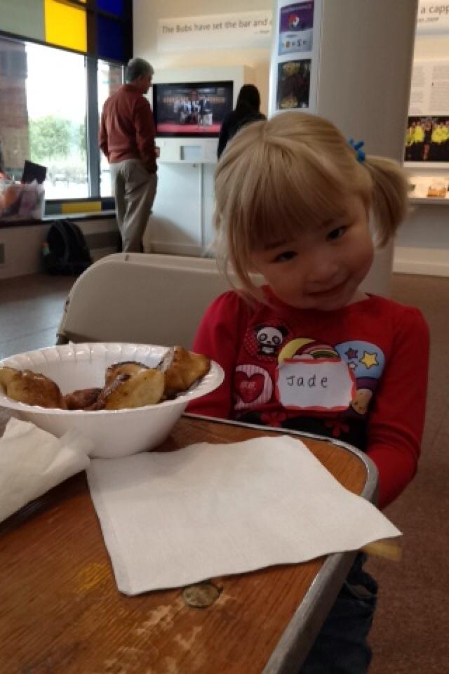
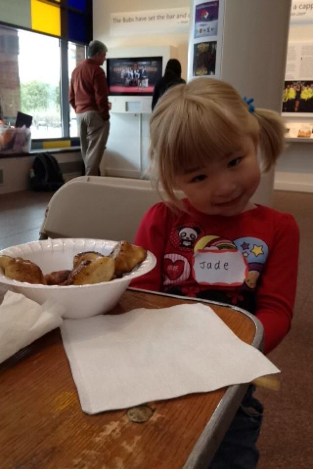

About Us
Tufts China Care is an independent student run club at Tufts University and a recognized chapter of China Care under Half the Sky Foundation.
Our club is made up of dedicated students coming together and effortlessly working to improve the lives of orphans with special medical needs living in Half the Sky's China Care Home in Beijing. Within our local community, our Dumplings playgroup helps Chinese adoptees from the area connect with their culture. We also do our part by raising awareness around campus for international adoption and the current situations of orphans in China.
We are also granted the opportunity to travel to China over the summer and volunteer in the China Care Home in Beijing. This life-changing expereince allows China Care volunteers to see the direct impact of our fundraising efforts as they meet the children who have received medical attention through our donations.
Get Involved
There are many different ways for you to help carry out China Care's mission and get involved with us on Campus!
E-Board
You can apply to join the executive board. The e-board runs all of China Care's events throughout the year and participates in spreading awareness around our campus. Eboard members are required to attend weekly meetings, participate in fundraising events, the Dumplings playgroup, and other activities. Elections are held at the end of the academic year and new members are recruited the following fall. Email us at tuftschinacare@gmail.com to be notified when applications are available and make sure to keep a look out on our Facebook page to hear about when our general interest meeting in the fall will be held!
Dumplings Playgroup
To engage our local community, we hold monthly playgroups, called Dumplings, for Chinese adoptees to learn more about their birth culture. Each playgroup has a different theme with crafts, lessons and even dumplings to celebrate their Chinese heritage.
LUX Fashion Show
The LUX Fashion Show, held each spring, is Tufts China Care's largest fundraising bringing in over 60% of our total fundraising revenue each year. We will be looking for models, people to help with sponsorship, promotions and creative aspects of the show, and also volunteers to help with stage managing, lighting and other things behind the scenes.
Our Community
Lastly, nothing we have accomplished would have been possible without the tremendous support from our Tufts community who attend all of our fundraisers and events. One of the best ways to help China Care is to come to our Bubble Tea Sales, buy tickets to LUX, attend our movie sceenings, and encourage your friends come along!